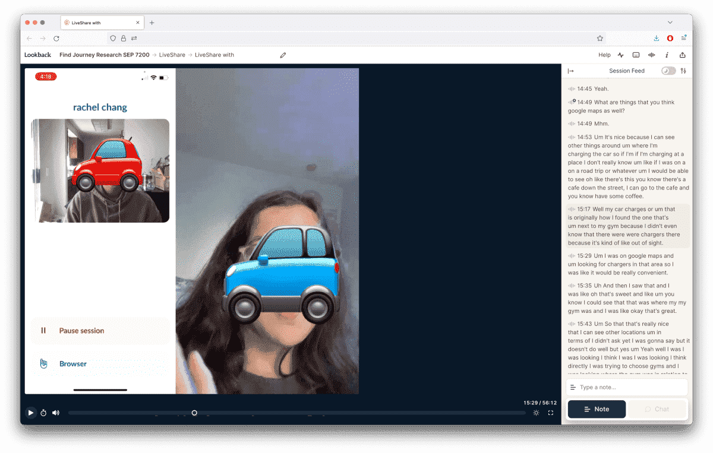

Find Journey Research
Assistance from: Product Manager, Senior UX Researcher, UX Manager
I ran a qualitative research study to better understand how electric vehicle drivers find and evaluate charging stations in the US and EU. I then led an internal workshop, informed by the research findings, with the UX team to generate ideas for improving our consumer app experience.
Problem Scope
The last major consumer driver study at ChargePoint was from 2016, and the EV market has changed since; adoption has grown and the size and number of networks have grown.
I was interested in hearing from “non-expert” drivers, as we were seeing the population shift away from tech savvy, early adopter types. I wanted to learn more about the challenges they encountered as they transitioned from gas powered vehicles and their mental models for fueling. I also wanted to learn more about the differences between European and U.S. drivers.
Methodology
Nine participants completed diary studies and a one hour interview via Lookback. Four drivers were based in the U.S., five in Europe, averaging 1.85 years of EV ownership. We discussed their driving and charging habits and completed a few tasks to better understand:
- How and why drivers find a station
- How drivers evaluate stations
- Drivers’s charging habits and routines
- How drivers troubleshoot when they have a poor charging experiences
- How driver interpret map pins and station status labels
Findings
- Drivers tend to frequent the same stations and do not often charge at unfamiliar stations.
- Range anxiety, driving habits, and inconsistent charging experiences lead drivers to visit the same few stations.
- Drivers are more likely to use an unfamiliar station for opportunistic charging.
- Drivers mitigate risk by using familiar stations and networks.
- All participants were able to recount encountering a broken or incompatible charger.
- Drivers are more confident chargers from a familiar network will be compatible and do not require additional set up (e.g. downloading an app)
- Drivers may also have brand preferences because of reward or reimbursement programs.
“I don’t go to some places...because the range is not that long. I’m always very careful about watching how much battery capacity I have.”
- Drivers each have their preferred way of finding a station; they may rely on their memory, personal heuristics, or use a tool.
- With apps, drivers may use the in vehicle dash app, navigation apps, network specific apps, or network aggregator EV apps to find stations
- Sophisticated drivers will use multiple apps to look up and verify charger data.
“I sort of knew [stations] would be there, it’s one of the biggest service stations.”
- Selecting a station is a complex series of decision making.
- When deciding on a station, drivers primarily consider: proximity, availability, charger speed, price, and familiarity. Priority of each criteria changes based on their need in that moment.
- Drivers use photos of stations to assess station compatibility, determine station location, and establish situational awareness.
- Drivers want straightforward information; “Can I charge here, yes or no?”
- Drivers often struggle with connector names and other terminology
- Drivers will determine compatibility by looking at station networks or station hardware, rather than evaluate technical terminology.
- Even if drivers know what connector they have, comprehension may be limited or inaccurate. One driver knew he needed a “CCS” connector but only saw "J1772" under the station attributes and concluded that connector types were not listed. Another driver thought “Level 2” (speed) was the type of connector his car required.
“It depends how much time I've got...If I'm going to work...I'll go to the [fast charging] station there because I know I can do it in half an hour and just head off to work in the morning.”
“If there is no photo of the charger and I don’t know the location I would probably be reluctant...I can’t really see what’s around it...I feel safe at a mall or outside of a restaurant...”
I also produced a journey map visualizing the decision making drivers undergo when deciding to when and where to charge. The chart emphasizes that charging can be:
- Routine (at work, during weekly errands)
- Opportunistic (unexpected station, convenience)
- Urgent (emergency charging, refueling on long trip)
Workshop
I then ran a workshop with the UX team and other stake holders. Informed by the findings, I wanted participants to think about how we might we:
- Simplify and streamline decision making and reduce mental load
- Inspire driver confidence when they pick a station to charge at
- Motivate drivers to learn about charging and stations
The workshop comprised of a competitive analysis activity, rose/thorn/bud activity, and sketch activities to generate ideas on how to approach redesigning the consumer app.
- Support driver education and comprehension
- Use familiar units and metaphors to communicate data in alternate ways. How can speed be represented visually? How can pricing be communicated in a familiar way (e.g. time vs kilowatt hour)?
- Add a map key for pin colors and shapes. Currently, drivers are left to infer pin meaning.
- Gray pins are a catch all for "dumb," offline, and faulted chargers. Can more nuance be introduced and is it be useful for helping drivers find stations?
- Drivers often believe only ChargePoint stations are visible on the app. Educate drivers on roaming networks and other networks visible on our app
- A tutorial that opens on first use. Depending on the driver's familiarity with EVs, the tutorial could just be a walkthrough of the app or include a brief charging tutorial for first time EV drivers.
- Deliver relevant, parsable search results
- Drivers should be able to use more flexible search queries (e.g. "chargers near grocery store") and not just addresses.
- Allow drivers to sort stations by speed, amenity, price, or distance. The importance of each depends on the driver's charging context.
- A trip planner should take into account how busy sites are, amenities present, and the driver's tolerance of range anxiety.
- Quick filters visible at the map level enable drivers to remove irrelevant results.
- Shortcut buttons to access common search locations, such as "Work" or "Home," reduce friction.
- Capture driver attributes to serve better suggestions
- Have drivers answer a few questions to better understand their charging needs and generate a charging profile. Relevant information includes primary charging location (home, in the wild, workplace, etc.), charging speed tolerance, and driving habits.
- Allow drivers to save charging adapters.
- Stations could be rated on how likely they are to match a driver's needs, reducing the friction of selecting a station. Suggestions could potentially change based on location and time.